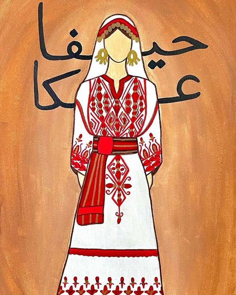
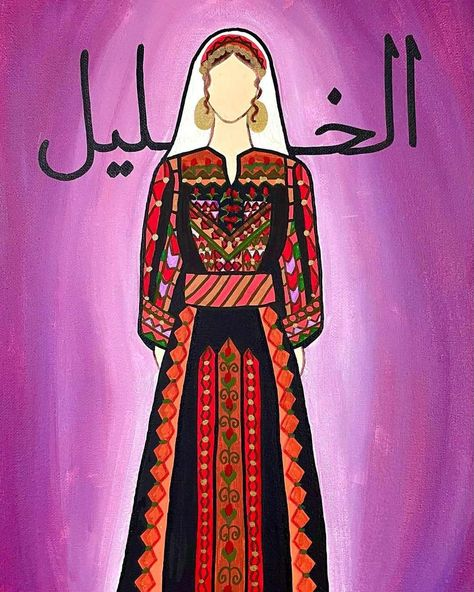
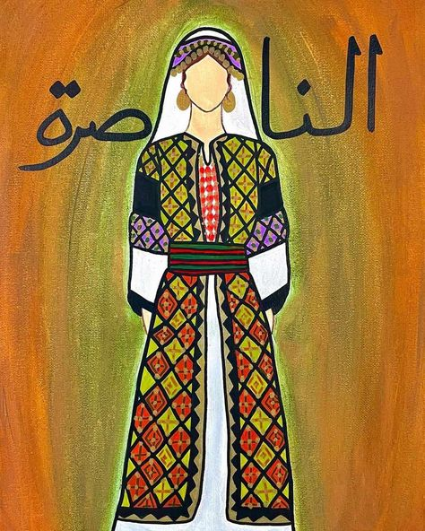
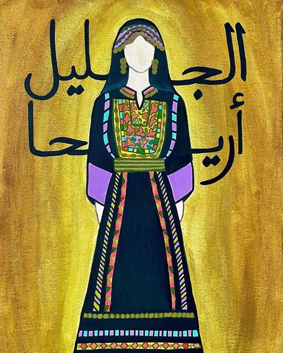
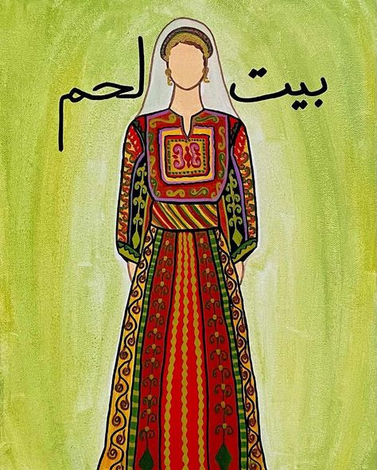
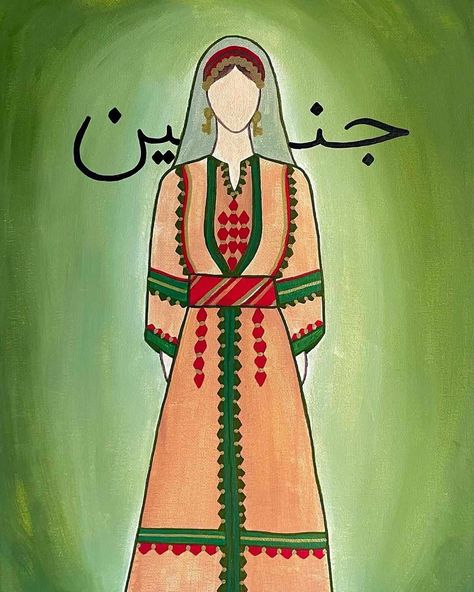
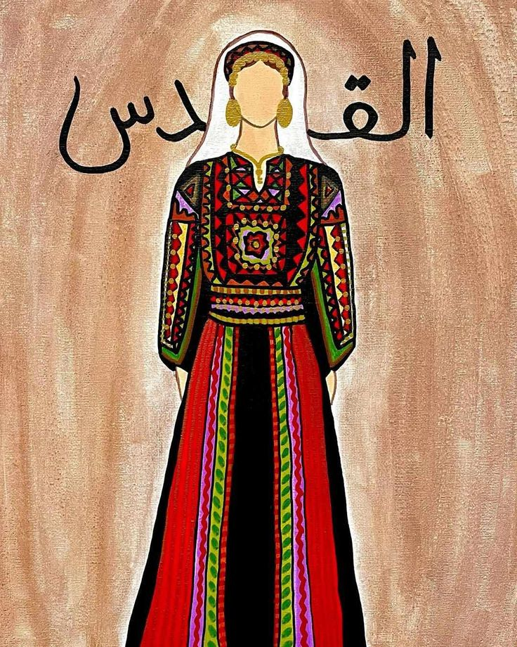
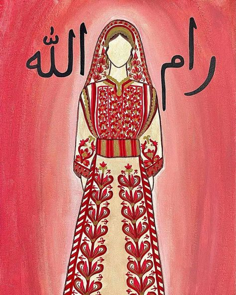
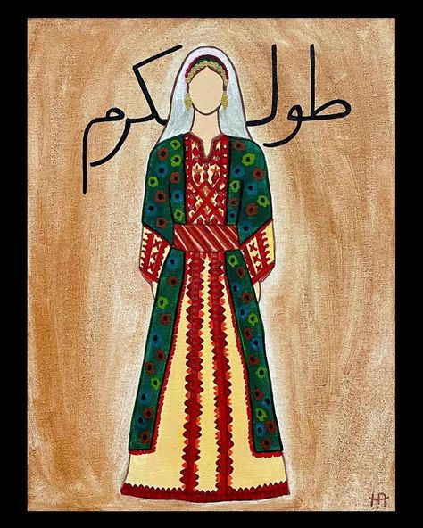
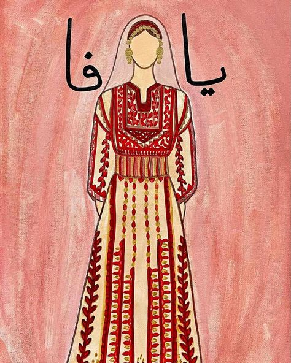

Tatreez Treasures
A visual journey through Palestinian heritage
{kind=link}

Akka
Akka's vibrant embroidery features nature-inspired motifs, reflecting the city's diverse heritage.
{kind=link}

Al-Khalil
Hebron's embroidery tells stories of heritage through intricate floral and geometric patterns.
{kind=link}

Al-Nasera
Nazareth's embroidery preserves identity with distinct local flora and geometric motifs.
{kind=link}

Al-Jalil
Galilee's vibrant embroidery blends cultural influences in a powerful expression of identity.
{kind=link}

Bethlehem
Famous for metallic threads, Bethlehem's designs reflect deep spiritual and historical heritage.
{kind=link}

Jenin
Jenin's vibrant embroidery embodies the resilience and determination of the Palestinian people.
{kind=link}

Al-Kuds
Jerusalem's spiritual embroidery draws inspiration from iconic religious and historical landmarks.
{kind=link}

Ramallah
Ramallah's iconic cross-stitch on white linen captures the land's essence with cypress motifs.
{kind=link}

Tulkarem
Tulkarem's exquisite embroidery stands as a symbol of creativity and enduring Palestinian tradition.
{kind=link}

Yafa
Jaffa's embroidery blends coastal beauty with history, featuring orange blossoms and cypress trees.